|
Configuración Bluetooth de Meteo Watcher |
||
|
|
Microsoft Windows |
|
| Instalación del
Interfaz de dispositivos Bluetooth
|
| Si su ordenador personal no
dispone de interfaz de conexiones Bluetooth, lo primero que hay que hacer es
configurar el adaptador USB-Bluetooth que se incorpora junto con el Meteo
Watcher. 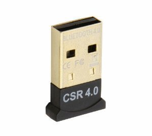 Lo conectaremos en un puerto USB y el instalador de dispositivos de Windows nos indicará algo como: 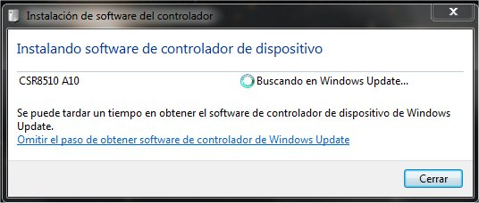 Una vez finalizada la instalación, iniciamos el Administrador de dispositivos (ejecutando devmgmt.msc) y tendremos ésto: 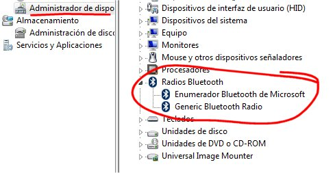 Con lo que ya habremos terminado correctamente la fase de instalación del interfaz de dispositivos Bluetooth. |
| Instalación del
dispositivo MeteoWatcher
|
| En esta fase vamos a
vincular un nuevo dispositivo Bluetooth a nuestro sistema. Para ello,
conectaremos el Meteo Watcher a la alimentación de 12v con cuidado con no
invertir la polaridad. Acto seguido, conforme se muestra en la imagen, iremos a la esquina inferior derecha de la pantalla, pulsaremos botón izquierdo del ratón donde indica 1. Aparecerá una pequeña ventana en la que deberemos ver el icono representativo de Bluetooth. Pulsaremos sobre él con el botón izquierdo del ratón como se indica en 2. Aparecerá una nueva ventana de opciones y seleccionaremos Mostrar dispositivos Bluetooth con el botón izquierdo del ratón como se indica en 3. 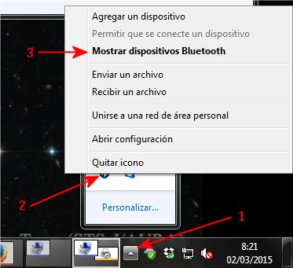 Entonces aparecerá la siguiente ventana: 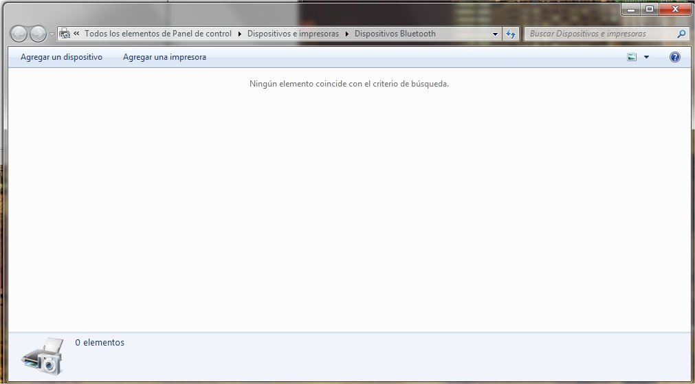 Seleccionaremos en Agregar dispositivos. Puede que tengamos que esperar unos instantes hasta que se identifique al MeteoWatcher, pero finalmente obtendremos: 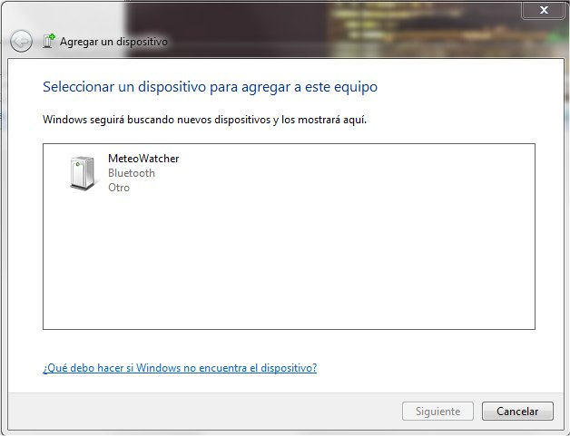 Seleccionamos MeteoWatcher y pulsamos Siguiente, apareciendo la siguiente ventana de opciones: 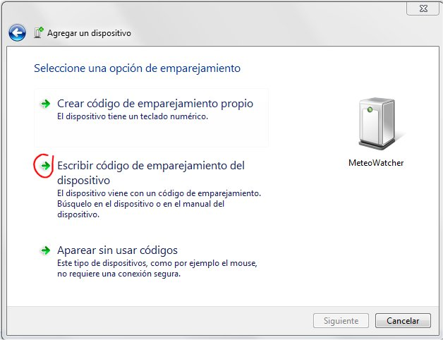 Seleccionaremos Escribir código de emparejamiento del dispositivo. 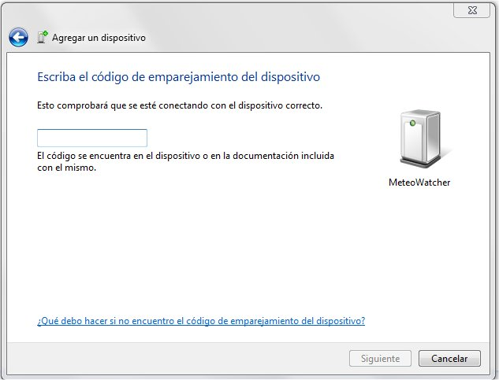 En el recuadro escribiremos el código PIN del MeteoWatcher: 1234 y pulsaremos Siguiente. 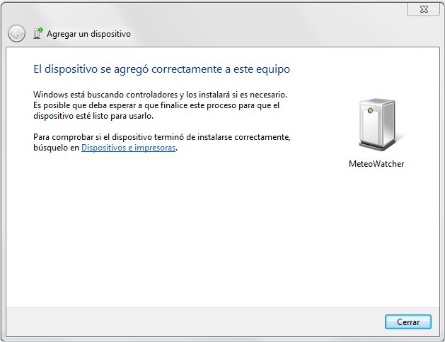 Podemos pulsar el botón de Cerrar, pues ya hemos finalizado el proceso de vinculación. De manera automática Windows comenzará a instalar los drivers de MeteoWatcher, que son serán dos puertos COM. 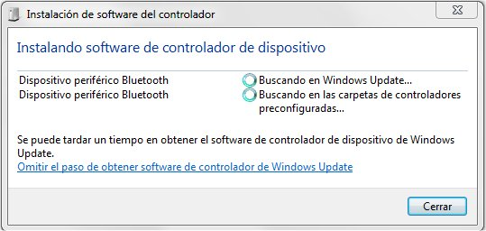 Una vez que finalice tendremos: 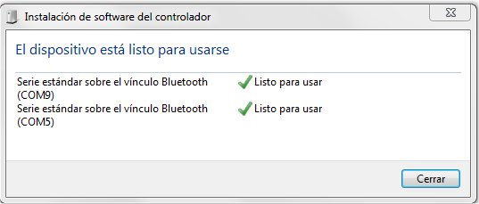 Podemos cerrar la venta, y en Administrador de dispositivos (ejecutando devmgmt.msc), si todo ha ido correctamente, tendremos: 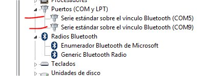 En este caso se han identificado como COM5 y COM9. No intente cambiar el número del puerto COM asignado, pues en ocasiones genera problemas. Como se ha visto, Bluetooth define dos dispositivos COM. Utilizaremos para establecer la comunicación el destinado a tráfico saliente, que será el que habrá que configurar en el programa del MeteoWatcher. Para ello, abriremos nuevamente el gestor de conexiones Bluetooth y seleccionaremos Abrir configuración: 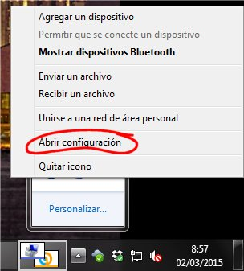 Pulsando en la pestaña Puertos COM obtendremos: 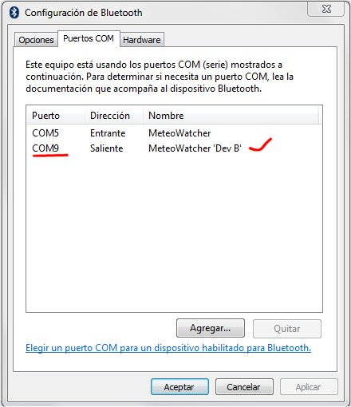 Para dialogar con MeteoWatcher deberemos seleccionar el COM9, pues es el que el gestor de Bluetooth ha etiquetado como Dev B. Pulsamos Aceptar y ya podemos iniciar el programa de control del MeteoWatcher, sabiendo que debemos configurar el COM9 como puerto de comunicaciones. Bajo ciertas circunstancias el gestor de Bluetooth puede intercambiar el papel de estos dos puertos COM, por lo que si tenemos problemas de conectividad será conveniente verificar el paso previo. |